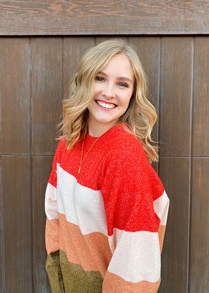

About Me!

Background
- Born and raised in Southern California, however, I did live in Europe for 4 years when I was younger
- I love photography, spending time with friends and family, reading, off roading, and skiing!
Education
- Villa Park High School Class of 2018
- I am studying Information Science at the Univeristy of Colorado Boulder with a minor in Creative Technology and Design. I will finish my BS in May of 2022 and an accelerated masters in May of 2023.
- Dean's List Fall 2018, Spring 2019, Fall 2019, and Spring 2020.
Work Experience
- Head Visuals Editor and Data Analyst for the CU Independent (May 2019 - Present)
- Google exploreCSR Grant Recipient (January 2020 - May )
- Undergraduate Research Assistant (May 2020 - Present)
- Casey Jane Photography (freelance photography; May 2018- Present
- Second Camera for Shelby Danielle Photography (March 2018 - Present)
Skills
- Lightroom
- Photoshop
- Slack
- Canva
- Tableau
- Google Analytics
- Google Data Studio
- Jupyter Notebooks
- Python
- Basic HTML and CSS
- According to Abe I have a hacker mindset